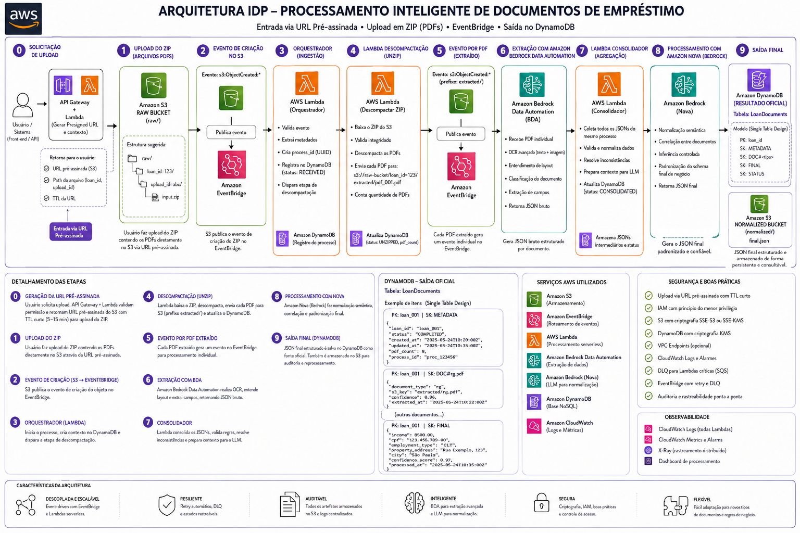

Solução Enterprise de Intelligent Document Processing com IA Generativa. Classificação automática, extração inteligente e estruturação confiável em escala.
Empresas perdem milhões anualmente com processos manuais de documentação. O gargalo humano limita crescimento, gera erros e compromete a experiência do cliente.
Clientes desistem durante a espera. Processos lentos significam oportunidades perdidas e conversão reduzida em até 40%.
Equipes grandes dedicadas apenas à digitação manual. Despesas fixas que não escalam com o volume de negócios.
CPF incorreto, endereço incompleto, valor errado. Cada erro gera reprocessamento, custos adicionais e insatisfação.
Em campanhas promocionais ou datas de pico, o gargalo é humano. Não é possível crescer sem aumentar proporcionalmente a equipe.
Erros em dados de clientes podem gerar problemas de compliance. Multas e sanções por inconsistências em informações sensíveis.
Arquitetura serverless construída inteiramente sobre AWS. Processamento orientado a eventos, escalabilidade automática e IA Generativa para transformar documentos em dados estruturados.
O cliente solicita upload via API Gateway e recebe uma URL pré-assinada para acesso controlado e restrito a um bucket do Amazon S3 em caráter zero-trust, garantindo upload seguro, sem gargalos e direto para o armazenamento.
Amazon Bedrock Data Automation identifica automaticamente cada tipo de documento: identidade, comprovantes, extratos, documentação imobiliária. Bem como, identifica possíveis entradas maliciosas.
OCR avançado combinado com IA Generativa extrai dados relevantes de cada documento com precisão superior a processos manuais.
Amazon Nova com tool calling gera JSON estruturado e padronizado. Dados consistentes, validados e prontos para integração.
Os objetos JSON são armazenados no Amazon S3, garantindo alta otimização de custos via ciclo de vida do S3. O Amazon DynamoDB armazena os metadados desses objetos, proporcionando rastreabilidade e auditoria em dupla verificação.
Cada documento é processado independentemente. A Lambda orquestradora coordena execução paralela para máxima performance.
Acompanhe o journey de um documento atravessando toda a arquitetura. Cada etapa é otimizada para performance, confiabilidade e escalabilidade.
Pacote de 5-8 documentos em PDF enviado através da aplicação.
Endpoint seguro e escalável. Gerencia autenticação, rate limiting e roteamento para Lambda com zero infraestrutura. Usamos um padrão ouro no mercado, o uso de URL pré-assinada para upload direto no S3.
Arquivo ZIP enviado diretamente para bucket S3. PoliticaZero Trust, bucket de ingestão é adeus a gargalos e falta de segurança.
Evento de upload dispara Lambda orquestradora automaticamente. Esse orquestrador garante desacoplamento completo entre componentes e escalabilidade
ZIP é descompactado. Cada documento é processado em paralelo.
Classificação automática e extração de dados com IA Generativa. Aqui, usamos Blueprint pré-treinado para documentos financeiros e de identidade.
Modelo LLM de última geração. Este Tool calling garante JSON estruturado e validado sem parsing manual.
Resultados de todos os documentos são consolidados em um JSON único.
JSON estruturado persistido em objetos S3 e auditado por DynamoDB. Criptografia em repouso habilitada.
CloudWatch para métricas, logs e alarms. CloudTrail para auditoria. X-Ray para tracing distribuído. Monitoramento proativo e debugging eficiente.
Conheça a interface de usuário desenvolvida em Python com Streamlit. Uma experiência intuitiva que transforma o processamento de documentos em uma tarefa simples e eficiente.
Design orientado a eventos, sem servidores provisionados. Escala automaticamente, paga apenas pelo uso e garante alta disponibilidade.

Princípios de cloud-native aplicados em cada decisão. Serverless, event-driven e pay-per-use para máxima eficiência e inovação.
Zero servidores para gerenciar. AWS provisiona infraestrutura automaticamente. Foco 100% em código de negócio.
Arquitetura orientada a eventos. Componentes desacoplados respondem a triggers. Alta resiliência e flexibilidade.
Paga apenas pelo que usa. Sem custos fixos. Economia de até 90% comparado a infraestrutura provisionada.
Infraestrutura desaparece quando não em uso. Zero custo quando idle. Escala instantaneamente sob demanda.
Amazon Bedrock com modelos de última geração. Classificação e extração com precisão superior a OCR tradicional.
Múltiplas AZs por padrão. 99.99% SLA em serviços críticos. Failover automático sem intervenção manual.
CloudWatch para métricas e logs. X-Ray para tracing. Visibilidade completa de cada execução.
IAM com least privilege. KMS para criptografia. VPC endpoints para tráfego privado. Security by design.
Estimativa detalhada de custos para a arquitetura serverless orientada a eventos de IDP, considerando um cenário de produção de 10.000 requisições mensais (lotes com média de 6 PDFs por pacote, totalizando 60.000 páginas processadas).
| Componente | Serviço AWS | Métrica de Cobrança / Consumo | Custo (USD) |
|---|---|---|---|
| 0. Geração de URL | API Gateway + Lambda | 10.000 requisições (execução rápida < 100ms) | $0,04 |
| 1. Armazenamento Raw | Amazon S3 (Standard) | 120 GB de upload + 150 GB extraídos | $6,21 |
| 2, 3, 5. Mensageria | Amazon EventBridge | ≈ 70.000 eventos publicados | $0,07 |
| Buffer Anti-Throttling | Amazon SQS | 60.000 mensagens mensais (Dentro do Free Tier) | $0,00 |
| 4, 7. Computação | AWS Lambda | 10.000 execuções de unzip + 10.000 de agregação | $2,50 |
| 6. Extração Avançada | Bedrock Data Automation (BDA) | 60.000 páginas processadas (Média de $0,01/pág) | $600,00 |
| 8. Estruturação Semântica | Amazon Bedrock (Nova Lite) | Input: 40M tokens | Output: 10M tokens (Pós-Consolidação) | $110,00 |
| 9. Persistência Final | Amazon DynamoDB | 10.000 gravações/mês + Leituras (Modo On-Demand) | $1,25 |
| Total Estimado AWS - Custo Mensal | $720,07 | ||
Dados estimados com o uso da ferramenta AWS Pricing Calculator
Comparação técnica baseada em dados reais do mercado brasileiro de crédito e métricas de processamento documental.
Nosso projeto não é apenas uma esteira de automação moderna; nós criamos uma máquina de gerar lucro. Nós entregamos a velocidade que o cliente quer, com a segurança que o compliance exige, a lucratividade com que as empresas sonham, e, ainda, é uma maravilha da previsibilidade financeira e escalabilidade, pois é uma solução cloud AWS, ou seja, pay-per-use / scale-to-zero… você só paga quando faz a requisição!
Baseado em: salário bruto de analista de crédito no Brasil (R$ 5.000/mês para 42h/semana) + ~80% encargos trabalhistas (INSS, FGTS, 13º, férias, vale-transporte) = custo real de R$ 9.000/mês. Velocidade de processamento manual de 10 páginas/hora para revisão detalhada com extração de dados. Custo automatizado de $0,072 por requisição ($720,07/10.000 requisições). Câmbio aproximado de R$ 5,00/USD.
Time multidisciplinar de especialistas em AWS, arquitetura serverless e inteligência artificial. Hackathon AWS.
Full Stack Developer | AWS Solutions Architect
Economista que fez transição de carreira para tecnologia.
Tenho afinidade com projetos Web Full Stack e Data & Analytics, utilizando
tecnologias como JavaScript, Java, Go, Python e AWS. Certificado AWS
Solutions Architect Associate, AWS Developer Associate, AWS Cloud
Practitioner e AWS AI Practitioner.
Data Analyst | Cloud Developer
Implementação de Lambda, EventBridge e orquestração. Pipeline de CI/CD e IaC.
Software Engineer | Cloud Developer
Configuração do Bedrock Data Automation e Amazon Nova. Schema JSON e validação de dados.
Front-End Developer | Cloud Developer
Front-end e integração com API. Experiência do usuário e visualização de resultados.
Business Analyst | Data Scientist
Front-end e integração com API. Experiência do usuário e visualização de resultados.
Front-End Developer | Cloud Developer
Front-end e integração com API. Experiência do usuário e visualização de resultados.